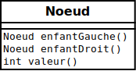

Types récursifs #
Arbre #
-
Un arbre est une structure avec une racine et des branches:

- NOTE: l’arbre est typiquement dessiné avec la racine en haut
-
Chaque cercle ci-haut est appelé un noeud
-
Chaque noeud peut avoir des enfants (indiqués par les flèches)
-
Chaque noeud a exactement un parent (sauf la racine qui n’a aucun parent)
Arbre binaire de recherche #
-
C’est un type d’arbre très utilisé en informatique:

-
Chaque noeud contient un
Comparable(p.ex. unint) -
Chaque noeud a au plus deux enfants
-
L’enfant à gauche est toujours plus petit que le parent (et grand-parent, etc.)
- p.ex.:
0 < 1et4<5
- p.ex.:
-
L’enfant à droite est toujours plus grand que le parent (et grand-parent, etc.)
- p.ex.:
5>3et2>1
- p.ex.:
Arbre binaire en Java #
-
Il suffit de représenter un
Noeud -
La définition de
Noeudest récursive:- Qu’est-ce qu’un
Noeud?- quelque chose qui contient deux noeuds!
enfantGauche()etenfantDroit()
- quelque chose qui contient deux noeuds!
- Qu’est-ce qu’un
-
Par exemple, pour représenter l’arbre ci-haut:
Noeud racine = new MonNoeud(3);
Noeud gauche = new MonNoeud(1);
Noeud droite = new MonNoeud(5);
Noeud gaucheGauche = new MonNoeud(0);
Noeud gaucheDroite= new MonNoeud(2);
Noeud droiteGauche = new MonNoeud(4);
Noeud droiteDroite= new MonNoeud(6);
racine.setEnfantGauche(gauche);
racine.setEnfantDroit(droite);
gauche.setEnfantGauche(gaucheGauche);
gauche.setEnfantDroit(gaucheDroite);
droite.setEnfantGauche(droiteGauche);
droite.setEnfantDroit(droiteDroite);